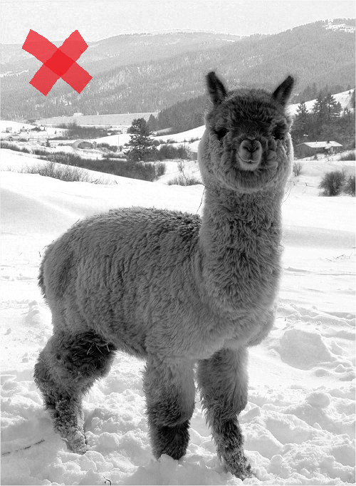
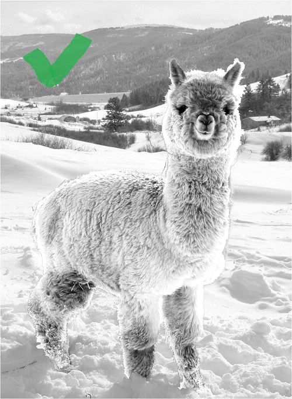
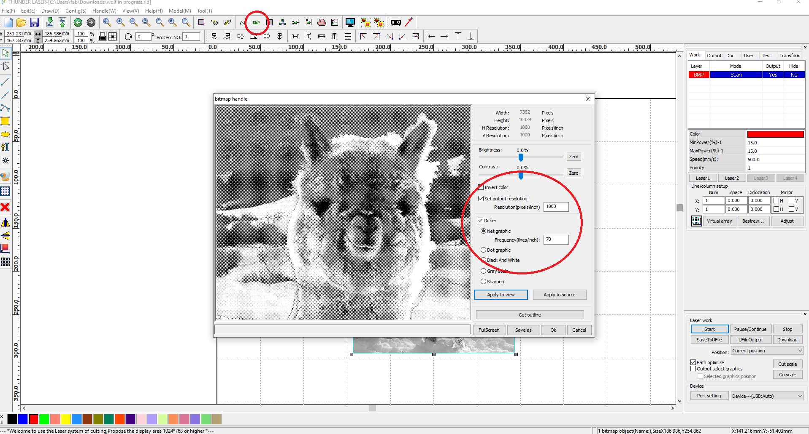
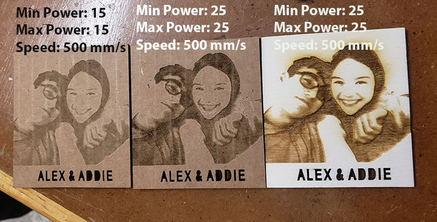

<p> This guide is for the RDWorks Software. You might have better luck using <a href=https://lightburnsoftware.github.io/NewDocs/CutSettings-Image.html>LightBurn software</a>. </p>
<h3> Conditioning Your Image</h3>
<li>Use photo editing software to make adjustments to your JPG or PNG, erring on the side of brighter and with higher contrast. If your image is too dark or low contrast, the resulting engraving will be a big gray blob.</li><br>

<h3> BMP Adjustments in RD Works</h3>
<li>After importing your image, click on the BMP tool at the top of RD Works to pull up this menu. Set the output resolution to 1000, tick Dither and Net Graphics which should be set to 70. Click Apply to View in order to see a preview of the adjustment, and click Apply to Source once you're happy with the settings.</li> 
<h3> Power Settings for Scan</h3>
<li>I have found the sweet spot to be between 15% and 25% at 500 mm/sec for engraving. Note, light cuts on cardboard will make the area under the laser look whiter than areas that went untouched by the laser, resulting in a solarized photo look. Wood does not have that same quirk.</li>
<p></p>
<br>